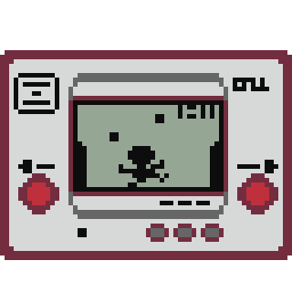

Color TV-Game
Year Released: Japan - 1977
Sold: 3 million
Nintendo's first foray into the home console market. Only released in Japan. It sold three million units over it's life span. The game only came with 6 slight variations on the game Pong.
Game & Watch
Year Released: US and Japan - 1980
Sold: 43.4 million

The Game & Watch portable consoles were a series of 60 different games on individual pocket sized LCD screens. The debut game of the entire series was called Ball and featured a character who would gone on to be called Mr. Game & Watch in later Nintendo games. In 1982 the D-pad was developed and patented by Gunpei Yokoi, the creator of the Game & Watch handheld games.
Nintendo Entertainment System/Family Computer (NES/Famicom)
Year Released: US - 1985, Japan - 1983
Sold: 61.91 million worldwide

The Nintendo Entertainment system was a remodeled version of the eariler released 1983 model in Japan. Recognized as the console to revitalize the US video game crash of 1983, it has gone on to become an iconic part of the US's pop culture. Popular game franchises like Metroid and the Legend of Zelda were started on the NES.
Best Selling Video Games
- Super Mario Bros.
- Duck Hunt
- Super Mario Bros. 3
Game Boy
Year Released: US and Japan - 1989
Sold: 118.69 million worldwide

Nintendo's first handheld game console with interchangeable cartridges for games. Initally the Game Boy was looked down upon internally. Though technicially less advanced than the competition of the same generation it out sold all of them due to its durability and longer lasting battery life. In 2011 it was inducted into the National Toy Hall of Fame.
Best Selling Video Games
- Tetris
- Pokemon Red, Green, and Blue
- Super Mario Land
Super Nintendo Enterainment System/Super Famicom (SNES/SFC)
Year Released: US - 1991, Japan - 1990
Sold: 49.10 million worldwide
Becoming the best-selling console of the 16-bit era, with its advanced graphics and sound chips, the SNES became a lasting influence well into the sixth generation of games. It rivaled the Sega Genesis which had been out on the market at least 2 years beforehand. But many say with the release of Donkey Kong Country, the SNES was able to pull ahead in the video game market.
Best Selling Video Games
- Super Mario World
- Super Mario All-Stars
- Donkey Kong Country
Virtual Boy
Year Released: US and Japan - 1995
Sold: 770,000 worldwide

Nintendo's first attempt at VR development and implementing true 3D graphics using an effect called parallax. Featuring technology that wouldn't come into play again until the Nintendo 3DS. It had a high price, was not very portable, and caused eye problems due to its red monochrome display. Meeting lots of criticsm from consumers and critics alike Nintendo pulled the product and cancelled most of its game line up within a few months of release. Only 22 games were ever released for this system.
Game Boy Color (GBC)
Year Released: US and Japan - 1998
Sold: 118.69 million worldwide
A color upgrade to the original Game Boy. Dominated the market in handheld arena by a large margin. This was the start of Nintendo building in backwards compatiblity with its previous handhelds.
Best Selling Video Games
- Pokemon Gold and Silver
- Pokemon Crystal
- Pokemon Pinball
1996 - N64
The Nintendo 64[a] (officially abbreviated as N64, hardware model number pre-term: NUS,[6] stylized as NINTENDO64) is a home video game console developed and marketed by Nintendo. Named for its 64-bit central processing unit, it was released in June 1996 in Japan, September 1996 in North America, and March 1997 in Europe and Australia. It was the last major home console to use the cartridge as its primary storage format until the Nintendo Switch in 2017. Some argue that this is a primary reason to why game developers switched to the competeing Playstation as it provided more space and cheaper development. Popular games for it were Super Mario 64, Starfox 64, and Banjo-Kazooie.
2001 - GBA (Codename: Atlantis)
The Game Boy Color[a] (commonly abbreviated as GBC) is a handheld game console manufactured by Nintendo, which was released in Japan on October 21, 1998,[3] and to international markets that November. It is the successor to the original Game Boy and is part of the Game Boy family.
The GBC features a color screen rather than monochrome, but it is not backlit. It is slightly thicker and taller and features a slightly smaller screen than the Game Boy Pocket, its immediate predecessor in the Game Boy line. As with the original Game Boy, it has a custom 8-bit processor made by Sharp that is considered a hybrid between the Intel 8080 and the Zilog Z80.[4] The American English spelling of the system's name, Game Boy Color, remains consistent throughout the world.
2001 - GCN
The Nintendo GameCube (commonly shortened to GameCube, NGC or GCN) was released in 2001. It was Nintendo's sixth generation game console, the same generation as Sega's Dreamcast, Sony's PlayStation 2 and Microsoft's Xbox. Until the console's unveiling at SpaceWorld 2000, the design project was known as Dolphin—this can still be seen in the console and its accessories' model numbers. The GameCube is the most compact sixth generation console. The GameCube is Nintendo's first game console to use optical discs rather than game cartridges. An agreement with the optical drive manufacturer Matsushita led to a DVD-playing GameCube system named the Panasonic Q, which was only released in Japan. Much of Nintendo's core line-up centered on sequels to their established hit franchises such as Super Mario Sunshine, Super Smash Bros. Melee, The Legend of Zelda: Wind Waker, Metroid Prime, Pokémon Colosseum and Star Fox Adventures, while new franchises like Animal Crossing and Pikmin were born. The GameCube has sold 21.74 million units.
2004 - NDS (Codename: Nintendo DS)
The Nintendo DS,[b] or simply DS, is a dual-screen handheld game console developed and released by Nintendo. The device released globally across 2004 and 2005. The DS, an acronym for "Developers' System" or "Dual Screen",[4] introduced distinctive new features to handheld gaming: two LCD screens working in tandem (the bottom one being a touchscreen), a built-in microphone, and support for wireless connectivity.[5] Both screens are encompassed within a clamshell design similar to the Game Boy Advance SP. The Nintendo DS also features the ability for multiple DS consoles to directly interact with each other over Wi-Fi within a short range without the need to connect to an existing wireless network. Alternatively, they could interact online using the now-defunct Nintendo Wi-Fi Connection service. Its main competitor was Sony's PlayStation Portable during the seventh generation of video game consoles.
Prior to its release, the Nintendo DS was marketed as an experimental, "third pillar" in Nintendo's console lineup, meant to complement the Game Boy Advance and GameCube. However, backward compatibility with Game Boy Advance titles and strong sales ultimately established it as the successor to the Game Boy series.[6] On March 2, 2006, Nintendo launched the Nintendo DS Lite, a slimmer and lighter redesign of the original Nintendo DS with brighter screens. On November 1, 2008, Nintendo released the Nintendo DSi, another redesign with several hardware improvements and new features, although it lost backwards compatibility for Game Boy Advance titles. All Nintendo DS models combined have sold 154.02 million units,[7] making it the best selling handheld game console to date, and the second best selling video game console of all time behind Sony's PlayStation 2.[2][8] The Nintendo DS line was succeeded by the Nintendo 3DS family in 2011, which maintains backward compatibility with nearly all Nintendo DS software.
2006 - Wii
The Wii was released on November 19, 2006 as Nintendo's seventh-generation home console. Nintendo designed the console to appeal towards a wider audience than those of its main competitors, the PlayStation 3 and Xbox 360, including "casual" players and audiences that were new to video games.[8][9]
These aims were emphasized by the console's distinguishing feature, the Wii Remote—a handheld motion controller that can detect motion and rotation in three dimensions, using a mixture of internal sensors and infrared positioning. The controller includes an expansion port that can be used to connect other accessories, such as the Nunchuk—an attachment with an analog stick and additional buttons, a "Classic Controller" gamepad providing a traditional control scheme, and Wii MotionPlus—an accessory designed to enhance the motion detection capabilities of the original Wii Remote models.[8][9] Packaged with almost all Wiis was Wii Sports which sold 82.88 million copies.
2011 - 3DS
Although the name and look of the device are similar to that of the DS series, the Nintendo 3DS (or shortly 3DS) is the successor to the DS and a brand new console. The Nintendo 3DS was released February 26, 2011. It contains three cameras, two on the outside (for 3D photographs) and one internal one above the top screen. The bottom screen is a touch screen comparable to the DS bottom screens, and the top screen is Wide Screen and an autostereoscopic 3D LCD. Autostereoscopy is a process that sends different images to the left and right eyes to enable the viewer to view the screen in 3D "without the need for special glasses". The 3DS is said to enhance Nintendo's online experience. In 2012, the 3DS XL was released, similar to the change between the DSi and DSi XL. It has 90% larger screens and design changes such as a matte finish and the stylus in a more accessible area. The 2DS was released on October 12, 2013. It is a variant designed to be affordable without the clamshell design or 3D capabilities of the 3DS. Another redesign, the New Nintendo 3DS, was released in Japan in October 2014, Australia for November 2014, and everywhere else in February 2015. It includes a C-Stick, ZR and ZL shoulder buttons, and a faster CPU, allowing for more software specifically for the New Nintendo 3DS (such as Xenoblade Chronicles 3D). Like the original 3DS, the New Nintendo 3DS also has an XL form. As of December 31, 2013, Nintendo has sold 42.74 million units, including 15.21 million Nintendo 3DS XLs and 2.11 million Nintendo 2DS units.[1]
2012 - WiiU
The Wii U was released on November 18, 2012 as a direct successor to the Wii, and the first entry in the eighth generation of home video game consoles. The Wii U's distinguishing hardware feature is the GamePad, a tablet-like controller which contains a touchscreen that wirelessly streams a video output from the console. The GamePad's display can be used to provide alternative or complementary perspectives within a game, or as the main display in lieu of a television.[15][16] In particular, Nintendo promoted the concept of "asymmetric" multiplayer, where a player with the GamePad would have a different objective and perspective than that of other players.
Unfortantely the console only sold 13.56 million and had a very tepid reception.
2017 - Nintendo Switch
The Nintendo Switch was released on March 3, 2017 and is Nintendo's second entry in the eighth generation of home video game consoles. The system was code-named "Nintendo NX" prior to its official announcement. It is a hybrid device that can be used as a home console inserted to the Nintendo Switch Dock attached to a television, stood up on a table with the kickstand, or as a tablet-like portable console. It features two detachable wireless controllers called Joy-Con, that can be used individually or attached to a grip to provide a more traditional game pad form. Both Joy-Con are built with motion sensors and HD Rumble, Nintendo's haptic vibration feedback system for improved gameplay experiences. However, only the right Joy-Con has an NFC reader on its analog joystick for Amiibo and an IR sensor on the back. The Nintendo Switch Pro Controller is a traditional style controller much like the one of the Gamecube.
The console's reveal trailer[36] premiered on October 20, 2016 and showcased the hybrid functionality of the system as well as footage from The Legend of Zelda: Breath of the Wild and from potential new titles in the Super Mario, Mario Kart, and Splatoon franchises. These unknown games were later announced to be Super Mario Odyssey, Mario Kart 8 Deluxe, and Splatoon 2 respectively.
The Nintendo Switch has sold 41.67 million units as of September 30, 2019, outselling the Nintendo Wii U, GameCube and Nintendo 64 within its first two years of launch.[37]